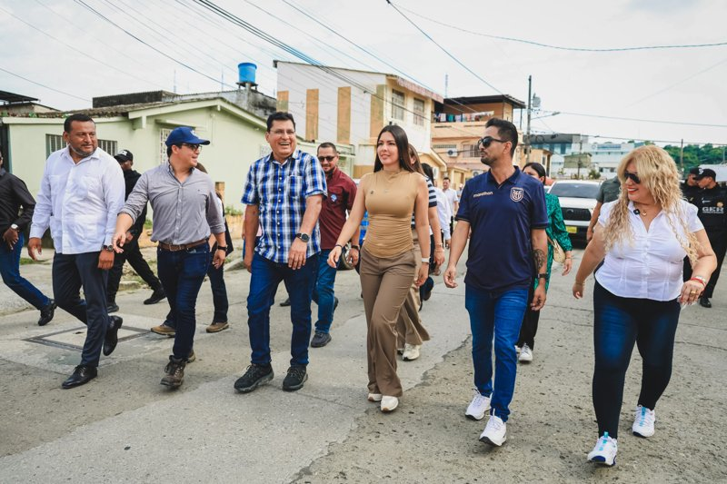
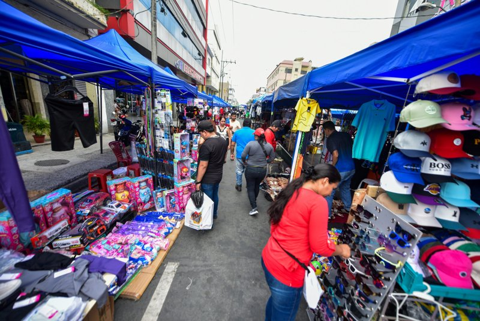
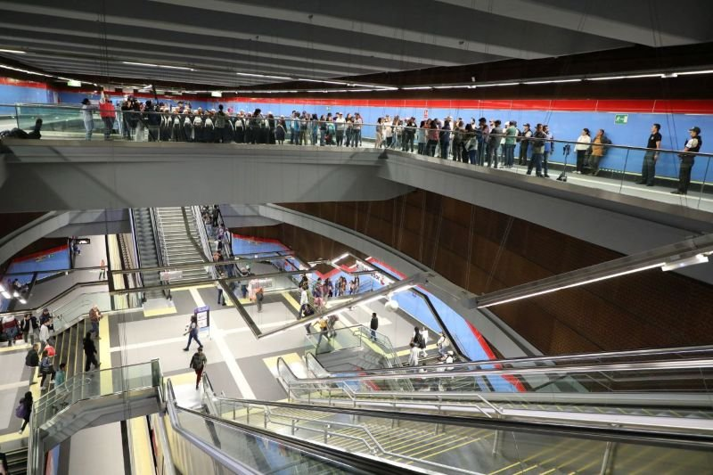
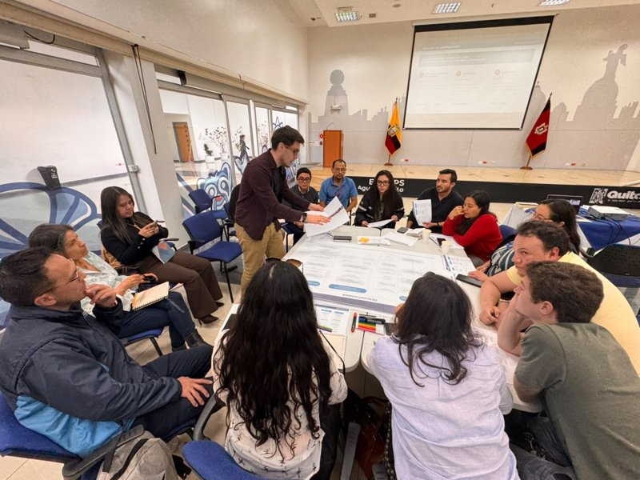
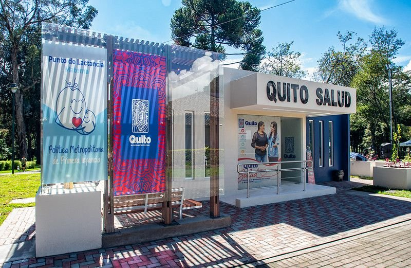
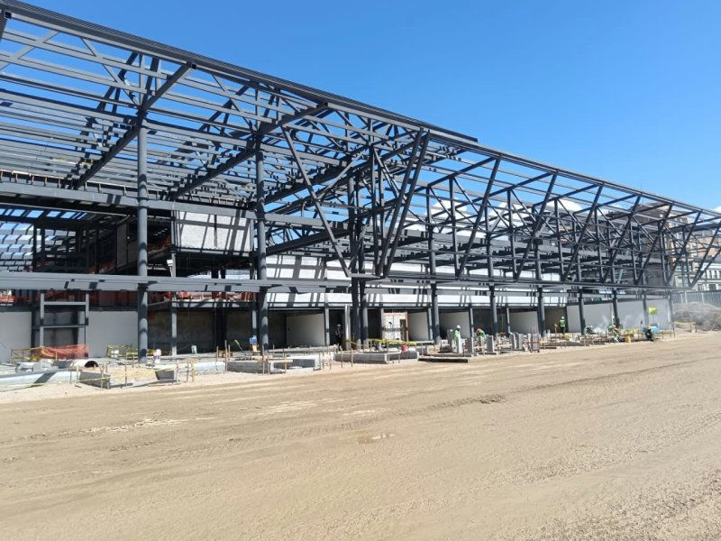
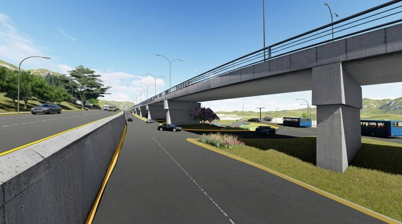

La Alcaldia inauguro dos parques nuevos en La Atarazana para las familias.
Los conductores ya pueden usar los primeros carriles del nuevo paso elevado.

Desde el 15 de noviembre habra 1.400 puestos comerciales en el centro de la ciudad.

El Metro de Quito ya registra 179,2 millones de viajes desde que empezo a funcionar.

El Municipio presento un plan para limpiar el rio y cuidar el ambiente.

Quito abrio cuatro puntos de salud en parques con atencion gratis.

El Municipio de Cuenca dice que faltan seis meses para terminar la obra.

El Ministerio de Infraestructura firmo el contrato para construir la obra.
Xavier Dominguez es el nuevo Coordinador Zonal 6 de Educacion.